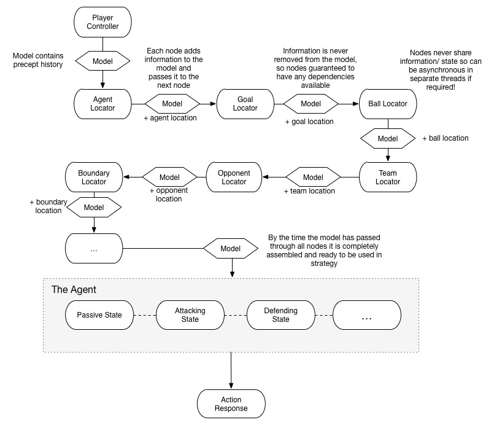

Intelligently Artificial FC - A Robocup Simulation League Team
IN3044 Coursework - Created by James Frost and Raghav Narula
Performance Measures
- Score as many goals as possible
- Concede as few goals as possible
Environment
- Football pitch
- Football
- Set of friendly players
- Set of opposing players
- Set of flags
Actuators
- Dash
- Say
- Turn
- Turn neck
- Kick
- Catch
Sensors
Environment Properties
Partially Observable - Each agent is only able to observe other objects within it’s viewable angle,
and within a maximum distance in the simulation environment.
Stochastic - The simulation server includes noise models for movement,
communication and senses such as vision and hearing, thus the information received includes some random
variability and is essentially unpredictable.
Sequential - The agent’s actions can will affect the state of the environment in the next simulation step.
Semi-Dynamic - The simulation environment will continue regardless of how long agents take to send
responses to information received, however information is received in discrete time steps.
Continuous - Although the simulation environment is built from discrete primitives, it is designed to
emulate a continuous environment, and should be treated as such.
Known - The physical properties of the environment are known, given in the Robocup Simulator manual.
Agent Type
Our agent implementation is a model based reflex agent. The model is a combination of a model.EnvironmentModel object and
multiple AIComponent objects in the ai package. Component objects populate the model with information derived from sensors
at each simulation step. If a simulation step does not contain enough information, the components store information to
make estimations about what the values should be.
System Architecture
Our solution for this coursework is designed around the concept of a one-way data flow.
Our model is re-created at every simulation step. The process begins with the server sending our ControllerPlayer
information via the info* methods. Once all the information is gathered into a Percept, a new model object is created.
This model object is passed sequentially through a chain of "AI Components" (in package ai) that implement the
IChainable Interface via the ai.AbstractSimpleAIComponent abstract class.
Each component is responsible for adding more information in to the model by using information contained in the percept.
This could be simple information such as the current play mode, or involve more complex calculations such as to determine
the agent's current location.
By the time the model has passed through all the components the model should contain enough information to determine
what set of actions need to be executed. Actions are executed in the final component, the AgentActionAIComponent. Here
the state design pattern is used to organise the agent's behaviour.
The concept is illustrated in the diagram below.
